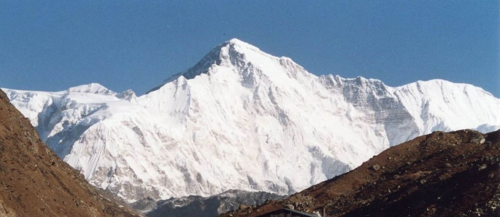

| Cho Oyu |
|  |
The sixth highest mountain on the planet
-
Cho Oyu has a height of 8188 m., it stands on the China–Nepal border.
-
Cho Oyu is considered the least difficult eight-thousander, with the lowest fatality rate.
-
It is the second most climbed eight-thousander after Everest (whose height makes it the most popular).
-
It has over four times the ascents of the third most popular eight-thousander, Gasherbrum II.
-
Cho Oyu has a broadly flat summit plateau with no cairn.